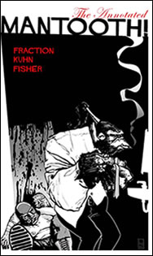

1. get KYGeek in order.
2. get the “hey, that’s should be a URL” list going. Example: YeahThatsNotFunny.com, or CrackerJazz.com. When I get bored and want to throw darts at the internet, I enter the first word that comes to mind into Mozilla, and I see what happens. There are SO MANY good URLs out there waiting to be had.
3. finish up my patch for camE, which is coming along nicely, but considering my C skills a limited, its taking a little while.
That’s all for now…
¨
I was listening to NPR this morning, and a story about the Negro League baseball leagues — specifically a pitcher by the name of “Peanut” Johnson. Johnson played three years, with a combined record of 33 wins and 8 losses, and also claims a .268 batting average! That’s pretty impressive! Most major league pitchers can’t claim 33-8 over the same number of games, and certainly can’t claim a .268 batting average! (Randy Johnson’s lifetime BA is .091!)
Oh yeah, I forgot to mention that “Peanut” Johnson’s first name was Mamie. Yeah, she was a woman. Now, that’s pretty bad-ass! Read a passage about her in the book A Strong Right Arm, whydontcha?
¨
Yarr! The ice-storm hath blown us over, it has. I don’t clearly remember a more odd winter storm than what we had here this weekend. It was raining, and turning to ice on the ground, and then eventually turned into snow. This formed a snow-looking sheet of ice over streets, houses, lawns, and cars. I had the pleasure of driving in it a couple of times (mainly to fetch my step-sister Kristin (whose name isn’t hyperlinked because, to my knowledge, she has no website. kids these days! In my day, we had websites!)), and it really wasn’t all that bad, if you didn’t drive like an ass.
Funniest weather-related moment for me, so far this weekend — having to trek across Showcase Stonybrook’s parking lot back to the car after the showing of Daredevil in a pair of Converse Chuck Taylor’s after the parking lot had COMPLETELY frozen into a sheet of ice. Shuffle-shuffle slip! Shuffle-shuffle slip! Grab stop sign! Hop from grassy median to median! I consider myself pretty sturdy, and I was slipping everywhichwaybutloose.
The winter isn’t over yet. February is always harsh around here. I cant’ wait for the The Black Keys/Sleater-Kinney show at the Southgate House on Friday! The Hump and The Hot Rock together….
¨
My headphones NEED to be louder — if only for the four minutes and sixteen seconds of BLISSFUL AUDITORY DESTRUCTION that is The White Stripes‘ “Little Acorns”. Sadly, there is no-one on AIM at the moment who cares for my rawk-ranting, else I would say something.
¨
ELEPHANT == ROCK. That evaluates as TRUE.
¨
You may want to look lovingly over at the right bar and notice that not one (1) but two (2) webcam images now appear. One at home, and one at work. I have had the home-cam sitting around for quite some time, and finally got around to plugging her in! Clicky on the image to pop open a nicely formed auto-refresho window, or if you prefer the more terrestrial form, click here.
The images from home are brought to you by a nice little app called camE, which I hacked up a bit to upload a thumbnail along with the regular pic. It’s written in C, and I haven’t programmed in C++ since 1996(!). However, I managed to do alright by myself. I remember now why I enjoyed C++. It’s all very simple — the syntax is clean and not stupid. It’s nice in a simple-machine sorta way. I will be sending patches to the author soon, hopefully with some sort of added functionality to maintain a remote archive, which will allow me to do the same prev/next thing like to do with work-cam. More later.
¨
I was sent a link to the full length “Terry Tate: Office Linebacker” short. You remember the ad from the Superbowl, right? Big linebacker sacking people in an office? That is some inspired stuff, I tell you. Not that I’d ever buy Reeboks or anything like that. But come on — any ad that references the holy-grail of office comedy that is Office Space can’t be all bad, can it?
¨

I borrowed The Annotated Mantooth by Matt Fraction from Hizzy-Dizzy over the weekend. Finished it today at lunch. It’s like this explosion of kicking, nonsense, lesbians and gorilla super-spies. And it’s annotated by Matt Fraction himself, whose wit is as keen as… oh, what the hell am I talking about? The man got three stories about a super-spy gorilla published, all of which where named “Kick; Splode; _fill in what gets kicked and ‘sploded here_”. I think that’s all you really need to know. Kick; Splode; Interview; Column;
Also borrowed Fortune & Glory by Brian Michael Bendis. I had previously borrowed Torso (also by Bendis), and was smitten with his writing and art all together, so anything else of his I could read, I would. Fortune & Glory is about his failed attempt to get his book “Goldfish” turned into a movie. For I, who am ignorant of the whole process by which a good book or idea gets turned into a steaming celluloid pantload, Bendis’ account of his travails read oddly like Torso — what will happen next? Oh my! Heh. Painfully funny, it was. Sample pages from Fortune & Glory: page 1, page 2. Review of F&G at The Onion AV Club
¨
Ok, so here we are, the United States of America. We agreed a long time ago that we should keep our politics and our faith separate issues, after all, when a government (or a king, or a dictator) sponsors a religion of any sort folks of other religions are certainly not done any big favors. Remember why a good chunk of the founders of the US escaped Britain? Well, anyway, our government is urging “‘mericans” to pray during this “testing time”.
¨
get thee to The Matrix to see The Animatrix Episode 1. I love stories that are deep and boundless, and the Wachowski’s (sp?) have really outdone themselves…
¨


{kind=link}